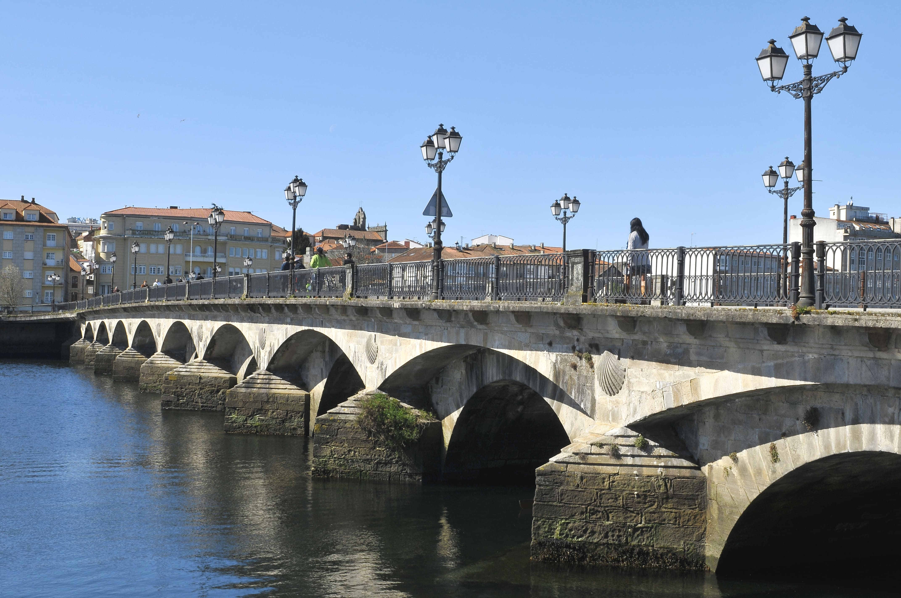

Encuentra hoteles, apartamentos y otros alojamientos adaptados para personas con movilidad reducida y otras discapacidades.
Descubre Pontevedra adaptado para personas con discapacidad. Alojamiento, restaurantes, transporte y actividades accesibles.

Encuentra hoteles, apartamentos y otros alojamientos adaptados para personas con movilidad reducida y otras discapacidades.

Descubre restaurantes y bares accesibles en Pontevedra con servicios adaptados para clientes con discapacidades.

Información sobre transporte adaptado: autobús urbano, tren, taxi y opciones de alquiler de vehículos accesibles.

Monumentos, museos y lugares de interés turístico accesibles e inclusivos para todos en Pontevedra.

Actividades, eventos y experiencias accesibles que puedes disfrutar en Pontevedra con total comodidad.

Servicios médicos, farmacéuticos, oficinas de turismo y descuentos especiales para personas con discapacidad.